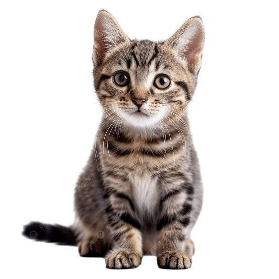

Other Animals
Dogs
Fish

Cats
Click to See All Cat Breeds!
Info About Cats
Scientific Name: Felis Catus
Animal Type: Mammal
Diet: Carnivore
Average Lifespan: 15 years
Weight Range: 5-20 lbs
Most Popular Cat Breeds
Maine Coon
Ragdoll
Persian
Exotic Shorthair
Abyssinian